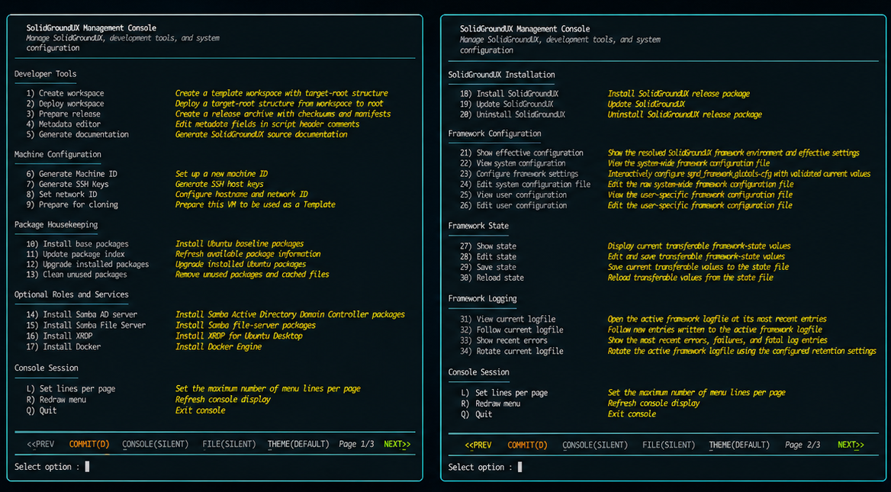

SolidGroundUX - Console Host and Management Console Overview
SolidGround Console

The SolidGround Console is a generic, module-driven application host for
interactive Bash tooling. It provides the menu engine, runtime controls, module
lifecycle, paging, rendering, and action dispatch used by console applications.
The host deliberately has no fixed application identity. Without modules it is
simply `sgnd-console`. The first successfully loaded module may supply a title
and description, turning the host into a specific console application.
The standard SolidGroundUX module set presents the host as the:
SolidGroundUX Management Console
This separation makes the console the reusable engine and the loaded modules the
application implementation.
Main Components
sgnd-console
Public launcher installed in `/usr/local/bin`.
sgnd-console.sh
Generic executable host. Resolves framework and application roots,
discovers modules, records module metadata, registers built-in session
actions, and runs the interaction loop.
sgnd-console-menu.sh
Menu engine. Stores registrations in datatables, builds cached menu and
page models, renders the current page, maintains the bottom toggle bar,
and dispatches menu and runtime hotkeys.
10-sgnd-config.sh
First standard module. Supplies the Management Console identity and
provides developer tools, SolidGroundUX installation, framework
configuration, state, logging, and diagnostics.
20-machine-config.sh
Standard machine-management module. Provides machine identity, template
preparation, package housekeeping, and optional server-role installation.
mod-template.sh
Source-only module template for creating additional console modules.
Host and Application Identity
The executable defaults to the neutral identity `sgnd-console`. A module may
optionally define `SGND_CONSOLE_TITLE_OVERRIDE` and
`SGND_CONSOLE_DESC_OVERRIDE` while it is being sourced.
Only the first successfully loaded module may apply these values. Module files
are loaded in sorted filename order, so numeric filename prefixes provide an
explicit and visible application startup order:
10-sgnd-config.sh
20-machine-config.sh
30-customer-extension.sh
The filename controls load order only. The stable module identity remains the
value declared through `SGND_MODULE_ID`.
Console Startup Sequence
User starts sgnd-console
↓
Framework and application roots are resolved
↓
SolidGroundUX bootstrap and executable runtime are loaded
↓
Console paths and state are initialized
↓
Built-in Console Session actions are registered
↓
Module files are discovered and sorted by filename
↓
Each module is sourced, validated, and recorded
↓
Modules register groups and menu items
↓
The menu model and page layout are cached
↓
The current page is rendered and input is dispatched
Expensive registration and layout work happens when the menu model changes.
Ordinary redraws reuse the cached model and cached page layout.
Module Contract
A console module is a source-only Bash file. It defines functions first and
registers its groups and items as its only intended load-time side effect.
Every module exports temporary host metadata:
SGND_MODULE_ID
SGND_MODULE_NAME
SGND_MODULE_VERSION
SGND_MODULE_DESC
The host clears these values before sourcing a module, validates them afterwards,
rejects duplicate module IDs, records the metadata, and clears the temporary
values before continuing with the next module.
Modules may keep their own permanent constants for use by their action functions.
The temporary `SGND_MODULE_*` values exist only for the loading contract.
Registration API
Modules extend the menu through two public host functions:
sgnd_console_register_group
sgnd_console_register_item
Groups define ordered menu sections. Items define labels, descriptions, action
functions, optional hotkeys, visibility conditions, and post-action behavior.
The host stores these registrations as the logical menu model.
Public Commands and Private Module Scripts
User-facing SolidGroundUX tools remain public commands under `/usr/local/bin`
or `/usr/local/sbin`. Modules invoke them through `_sgnd_run_public_command`,
which also propagates dry-run mode where supported.
Module-private helpers live below:
/usr/local/libexec/solidgroundux/console-modules/<module-id>/
They are invoked through `_sgnd_run_module_script` and do not require public
wrapper commands solely for internal use.
Runtime Controls
Frequently used runtime controls are shown continuously in the bottom bar:
COMMIT(D) CONSOLE(NORMAL) FILE(SILENT) THEME(DEFAULT) CLRSCR
The controls provide immediate access to:
d / D Toggle dry-run and commit mode
c Cycle console log level forward
Shift+C Cycle console log level backward
f Cycle file log level forward
Shift+F Cycle file log level backward
t Cycle themes forward
Shift+T Cycle themes backward
s / S Toggle clear-on-render behavior
Log levels and theme selections are persisted as framework state and redraw the
console immediately without invoking the normal post-action pause.
Paging and Rendering
Menu registrations are stored in datatables, but rendering does not repeatedly
traverse the datatable API. The menu engine materializes direct-index caches for
groups and items, calculates visible entries, and builds a cached page layout.
Redraws, theme changes, log-level changes, dry-run toggles, and page navigation
reuse these caches until registration data or layout constraints change.
This keeps startup explicit while making interactive redraws effectively
immediate, even for larger module sets.
Standard Management Console Modules
`10-sgnd-config.sh` defines the SolidGroundUX Management Console identity and
supplies these groups:
Developer Tools
SolidGroundUX Installation
Framework Configuration
Framework State
Framework Logging
Framework Diagnostics
`20-machine-config.sh` supplies:
Machine Configuration
Package Housekeeping
Optional Roles and Services
The host itself adds the Console Session group for page size, redraw, and quit.
Framework Configuration and Logging
The Management Console can show the effective framework environment, inspect or
edit system and user configuration files, and interactively configure supported
framework-global values with current values offered as prompt defaults.
Logging actions can open or follow the active logfile, show recent error-level
entries, and rotate the logfile according to the configured retention settings.
Dry-run consistency for every modifying Management Console action remains part
of the final release verification pass.
Console State and Framework State
Framework-wide defaults such as console log level, file log level, UI style, and
palette belong to `framework.state`. Console-specific layout values, such as the
selected number of lines per page, remain owned by the console state file.
This keeps transferable framework behavior separate from host-session layout.
Creating Another Console Application
A separate application can reuse the same host by supplying another module
directory through `--appcfg`. The first module supplies the application identity;
subsequent modules contribute functionality.
Conceptually:
Create a module directory
↓
Add numerically ordered source-only modules
↓
Let the first module define the title and description
↓
Register groups and actions through the public API
↓
Start sgnd-console with that module source
This makes `sgnd-console` a reusable console engine rather than a hard-coded
SolidGroundUX administration script.
Why the Console Matters
The console brings framework tools, administration, machine configuration, and
diagnostics together without merging their implementation. Modules remain small
and independently owned, while the host supplies a consistent runtime and user
experience.
In SolidGroundUX 1.8 the console therefore moves from example application to
framework subsystem: the engine on which the SolidGroundUX Management Console
and future console applications are built.